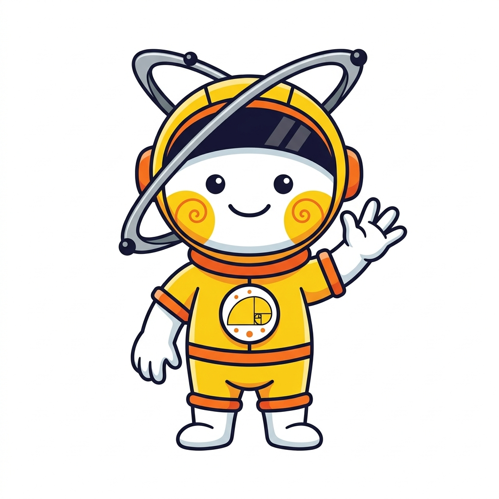
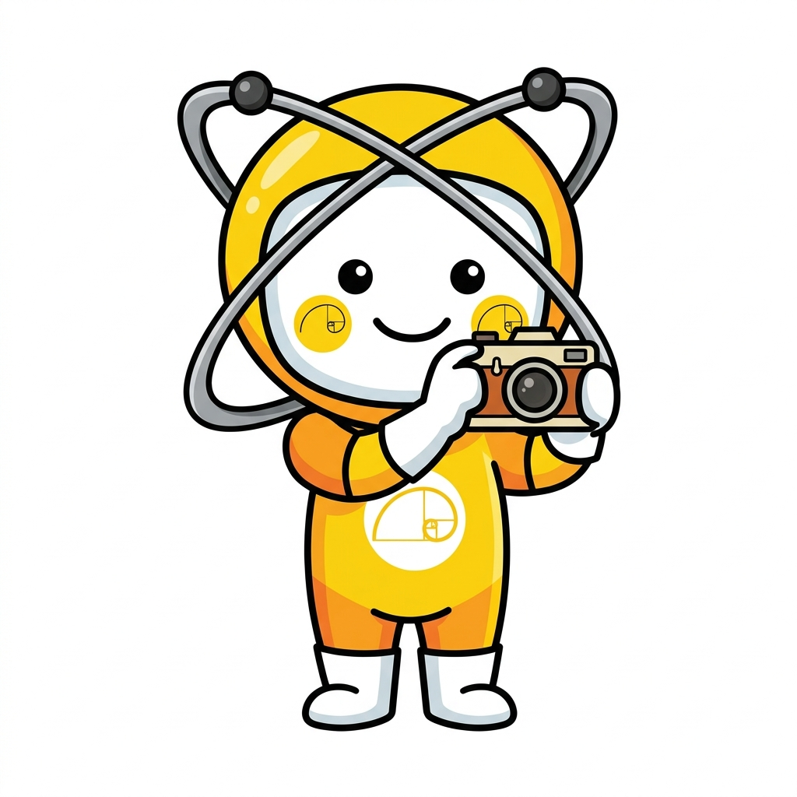

สมุดบันทึก
นักสืบธรรมชาติ

พี่ซายม่อน (SciMon):
"สวัสดีครับน้องๆ! ยินดีต้อนรับสู่ศูนย์ธรรมชาติวิทยาดอยสุเทพ มาถ่ายรูปวิจัยเพื่ออนุรักษ์สัตว์ป่ากันนะ! จำไว้นะครับ: เราเฝ้าดูอยู่ห่างๆ ไม่วิ่งไล่ ไม่ป้อนอาหาร และไม่รบกวนสัตว์ป่านะคร้าบ!"
เตรียมกล้องส่องสัตว์พร้อมหรือยัง?
ถือกึ่งสมาร์ตโฟนของคุณไว้ให้มั่น เดินบนเส้นทางศึกษาธรรมชาติอย่างระมัดระวัง แล้วมองหาเงาของสัตว์ป่ารอบๆ ตัวนะ!
จัดการข้อมูลวิจัย
คุณค่าของข้อมูลวิจัย
ศูนย์ธรรมชาติวิทยาดอยสุเทพ นำข้อมูลนี้ไปใช้วิเคราะห์การเปลี่ยนแปลงทางชีวภาพของผืนป่าดอยสุเทพ!
รูปภาพวิจัยคุณภาพ (Research Grade) มีสเปกดังนี้ครับ:
- ความแม่นยำ GPS ดีเยี่ยม (≤ 15 เมตร)
- ตรงกับสัตว์ป่าในระบบ
- ยืนยันชื่อสัตว์ป่าครบถ้วน
📂 คลังรูปภาพบันทึกสัตว์ป่าของฉัน
🎯 ตัวปรับกรอบโฟกัสภาพ
ช่วยพี่ซายม่อนขยับกรอบสี่เหลี่ยมให้คลุมตัวสัตว์ป่าพอดีหน่อยนะครับ! ลากตรงกลางกล่อง เพื่อย้ายตำแหน่ง หรือ ลากที่มุมสี่เหลี่ยม เพื่อขยายกรอบ พยายามจัดให้ตัวสัตว์ป่าอยู่ตรงกลางกล้องนะ!
ระบบสืบค้นและระบุชนิดพันธุ์สัตว์ป่า
คลิกเลือกชื่อสัตว์ป่าดอยสุเทพที่ถูกต้อง หรือพิมพ์ค้นหาฐานข้อมูลออนไลน์ได้เลยครับ

ภาพตัวอย่างของคุณ
พี่ซายม่อนชี้แนะ (SciMon Says):
"เลือกชื่อของสัตว์ตัวในภาพจากตารางตรงกลางได้เลยครับ ยิ่งตัวที่ระดับความหายากสูงๆ จะทวีคูณคะแนนให้เยอะเลยล่ะครับน้องๆ!"
สัตว์ป่าที่พบบ่อยบนดอยสุเทพ:
ชื่อสัตว์ป่า
ชื่อวิทยาศาสตร์
คำอธิบายรายละเอียดสายพันธุ์สัตว์ป่า
🚫 กฎเหล็กความปลอดภัยและการอนุรักษ์
คำแนะนำในการปกป้องสัตว์ป่าไม่ให้ได้รับผลกระทบจากคน
สัตว์ป่าดอยสุเทพ
กฎการอนุรักษ์ที่ต้องปฏิบัติร่วมกัน:
คำแนะนำความปลอดภัยเกี่ยวกับสัตว์ป่าดอยสุเทพจะแสดงขึ้นตรงนี้ครับน้องๆ